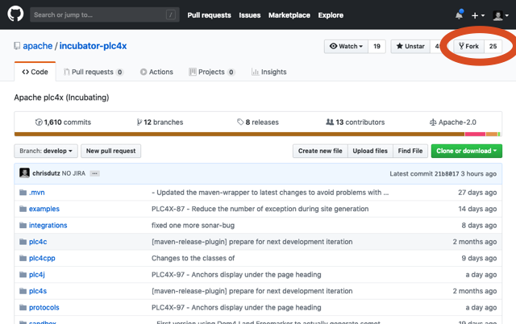
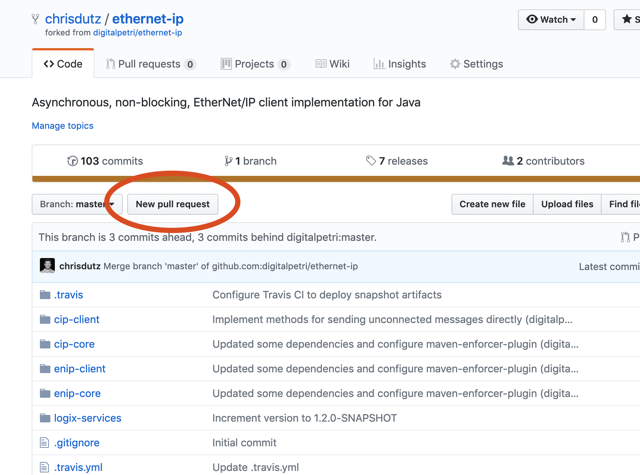

Contributing
Forms of contribution
There are multiple forms in which you can become involved with the PLC4X project.
These usually are, but are not limited to:
-
Submitting Pull Requests
-
Filing Bug-Reports
-
Active communication on our mailing lists
-
Promoting the project (articles, blog posts, talks at conferences)
-
Documentation
We are a very friendly bunch and don’t be afraid to step forward.
Commits
We make use of conventional commits.
As plc4x is a monolithic polyglot repository we usually define the scope as …(plc4[language shortcut here]/subcomponent)
(e.g. a new feature in Bacnet in the Golang part would have a message of feat(plc4go/bacnet): cool new feature for…).
Pull-Requests
The simplest way to submit code changes, is via a GitHub pull-request.
In order to do this first create a GitHub account and sign into you account.
After that’s done, please to to our GitHub site and create a so-called Fork.

What happens now, is that GitHub creates a full copy of the PLC4X repo in your account. Only you can commit to this.
Now ideally you check-out your cloned repository:
git clone https://github.com/{your-user-id}/plc4x.git
Now you have a copy of PLC4X on your computer and you can change whatever you want and as it’s your copy, you can even commit these changes without any danger of breaking things.
As soon as you’re finished with your changes and want us to have a look, it’s time to create a so-called Pull-Request.
You do that by going to your forked repository page on GitHub.
Every forked repository has an additional button called "New Pull Request":

If you click on this, we will receive a notification on your changes and can review them. We also can discuss your changes and have you perfect your pull request before we accept and merge it into PLC4X.
AI-Assisted and AI-Generated Pull-Requests
AI coding assistants have made it a lot easier to produce a pull-request, and the number of such pull-requests reaching us has been growing steadily. Please read this section before submitting one.
PLC4X is maintained by a very small number of people. Reviewing a pull-request costs us far more time than generating one costs you: we have to understand the change, judge it against protocol specifications and hardware we may have to get out of the cupboard, check it for side effects in a polyglot monorepo, and take responsibility for it afterwards. Most of these AI-generated pull-requests are not wrong - they are simply arriving faster than the few of us can process them, and that has become a real source of stress for the project.
We want to be explicit about the distinction we make:
-
If you are using AI to overcome a gap in your toolbox, you are very welcome. A typical example is an OT engineer with deep insight into a protocol but only rudimentary Java skills - that protocol knowledge is exactly what this project needs, and we are more than happy to provide mentoring to get the code side into shape.
-
If you are scanning open-source projects for arbitrary places to contribute in order to build up a "contribution reputation", please pick a different project. We do not have the review capacity to subsidise that.
Please introduce yourself first
Before we accept pull-requests from you, we expect you to subscribe to our developer mailing list
dev@plc4x.apache.org and to introduce yourself there: who you are, what your background is, and
what your interest in PLC4X is.
See the Getting in Contact page for how to subscribe.
This is not a formality. It tells us whom we are working with, what you already know and where mentoring would help, and it is the point at which a contribution turns into a conversation instead of a queue item.
Pull-requests submitted without such an introduction may be rejected. If such a pull-request contains a valid finding, we reserve the right to simply apply the proposed change ourselves, in order to avoid encouraging further drive-by AI submissions.
Keeping your fork up to date
As we are continuously working on PLC4X and you created a copy of our repo, this will become out-of-date pretty soon.
In order get the changes we introduced in the official repo you have to tell git about that.
You do this locally by adding a new so-called remote.
Per default the remote you cloned from is called origin.
Usually you will call the second remote upstream but in general you can call it whatever you like.
Add the remote on the commandline (or your git gui of choice):
git remote add upstream https://github.com/apache/plc4x.git
If you list all your remotes, with the following command:
git remote -v
It should output something like this:
origin https://github.com/{your-user-id}/plc4x.git (fetch)
origin https://github.com/{your-user-id}/plc4x.git (push)
upstream https://github.com/apache/plc4x.git (fetch)
upstream https://github.com/apache/plc4x.git (push)
If that’s so, you’re fine to continue, if not … well you could ask for assistance on our dev-list.
In order to get all changes of our upstream-repository, just execute the following command:
git pull upstream
This will get all changed from upstream and merge them locally. In order to update your GitHub version, you have to push things back to origin.
You can do this by executing the following command:
git push
(If no remote is provided, git will use origin per default)
Bug Reports
We use GitHub Issues as our Bug & Issue Tracker.
Feel free to submit feature requests, bug reports, patches, comment on issues, …
Documentation
As our documentation and website are generated as a side-product of our build, contributing to this technically the same as contributing to the code.
All our content is written in Asciidoctor and is located in src/site/asciidoc directories.
For a reference of the Asciidoctor syntax please have a look at the Asciidoctor documentation.
Branching model
The PLC4X project uses the following branching model.
The same model is used for a wide variety of other projects, so it should be pretty straight forward.
-
releasecontains the latest released state. -
Development is performed on the
developbranch. -
Features are developed in Feature-Branches with a prefix
feature/ -
Each minor release has a corresponding release branch
rel/1.0.0-SNAPSHOT -
A release branch is spawned from
developonly -
Bugfix releases don’t have a dedicated release branch, they are just performed on the corresponding minor versions release branch